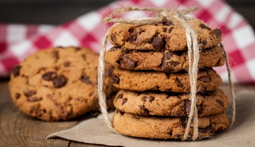
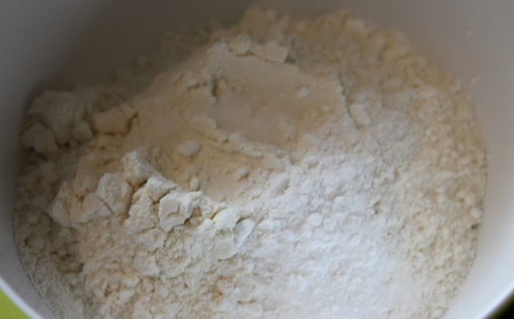
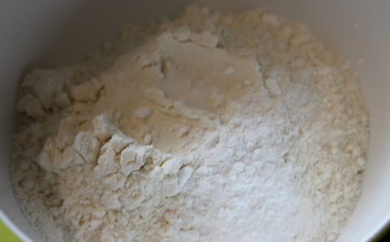

Recept en Ingredienten
Dit recept is bedoeld voor 25 personen.
maar u kan dit nog altijd verkleinen of vergroten door de aantallen van de benodigheden te vergroten of te verkleinen.
dit is wat je allemaal nodig hebt:
550 gram bloem

1 theelepel zout
1 theelepel bakpoeder
1 theelepel vanille-extract
180 gram kristalsuiker
180 gram donkere basterdsuiker
350 gram pure chocolade
2 eieren
250 gram boter (kamertemperatuur)
bakpapier en natuurlijk een oven.
voorbereiding
Hak de chocolade repen in kleine stukjes.
 Meng de bloem, bakpoeder en het zout in een kom.

Meng de bloem, bakpoeder en het zout in een kom.

Warm de oven op 190 gr.